Goal Check
To assign demerits to a student, you need to do so in the goalcheck tab.
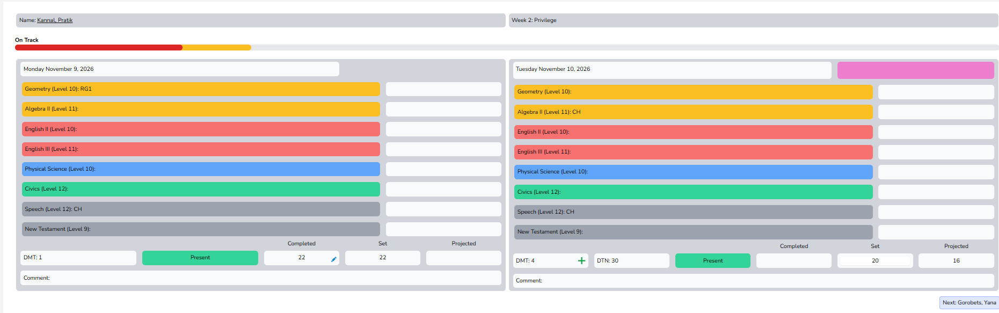
As you can see, this student has 4 demerits, which should result in 30 minutes of detention.
Supervisor's Dashboard
On the dashboard you can see all upcoming detentions.
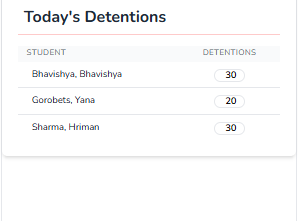
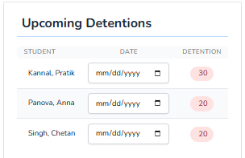
As you can see, this widget displays all students who have accumulated enough demerits to receive a detention.
If you click on a date in this widget, you will be able to choose the date when the student will serve their detention.
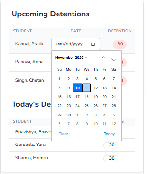
Once you have selected a date, it will appear in the widget.
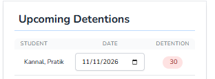
If you click on the number of detention minutes, a confirmation window will pop up.
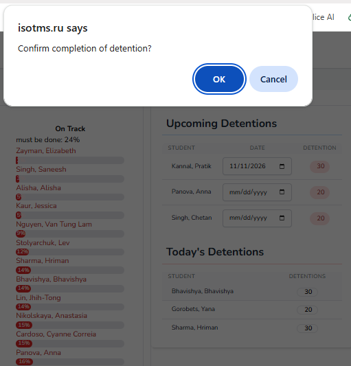
If you click the OK button, the status of the detention will change to Completed.
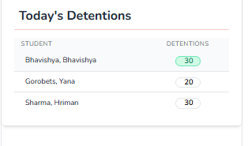
Demerits and Detentions Tab
Let's navigate to the Demerits and Detentions tab.
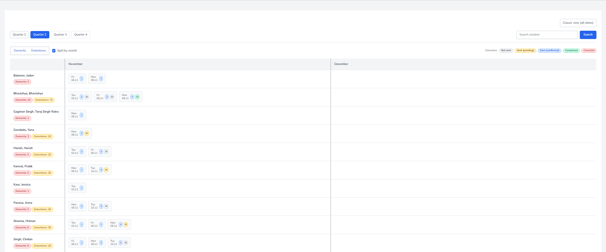
As you can see, Bhavishya's detention time is highlighted in green, which means that the Supervisor has marked the detention as completed.
Pratik's detention is highlighted in yellow, which means that the Supervisor has assigned a date for the detention.
There are several options available in this tab.
Quarter selection
On the left-hand side, you can choose which quarter to display.
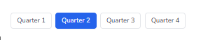
Split Month
You can also choose whether to split the view by months by checking or unchecking the Split Month box.
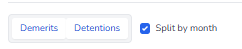
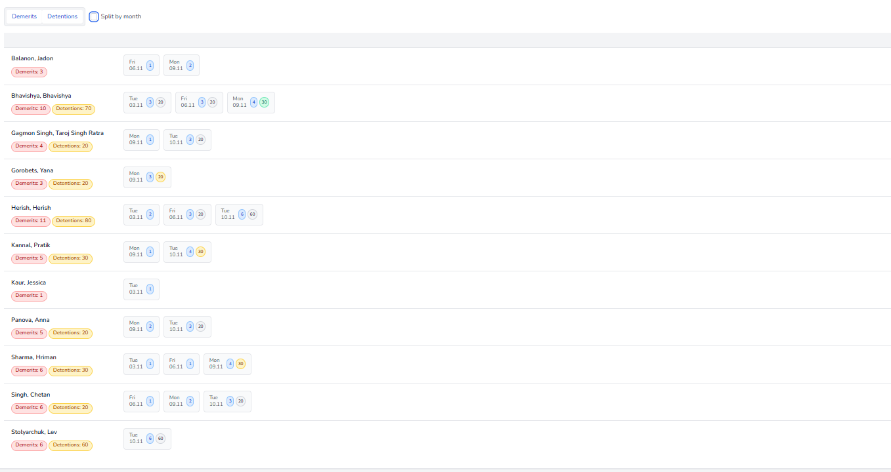
Display options
You can also choose what information to display:
- Demerits and detentions
- Detentions only
- Demerits only
- Neither demerits nor detentions
Simply click on the corresponding options.
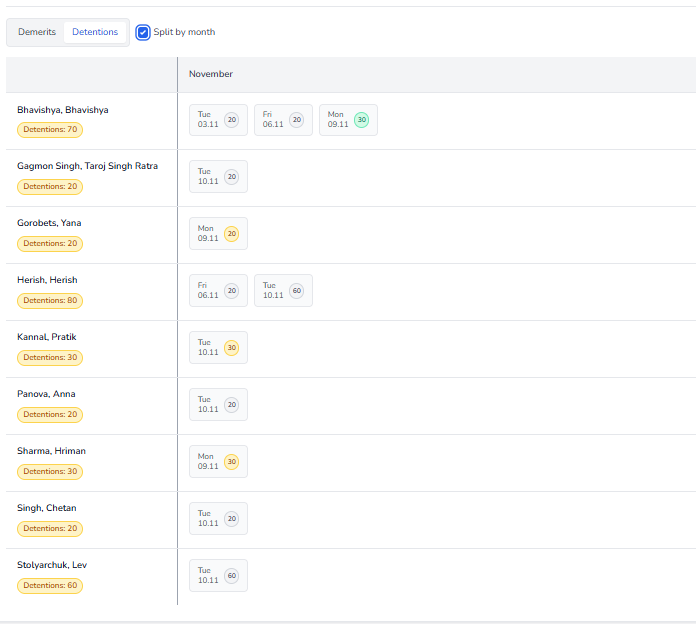
Options on the right-hand side
On the right-hand side, you can:
- Search for a particular student.
- Switch to the classic view.
- View the legend explaining the colour-coded statuses.
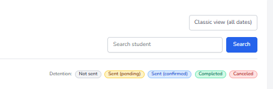
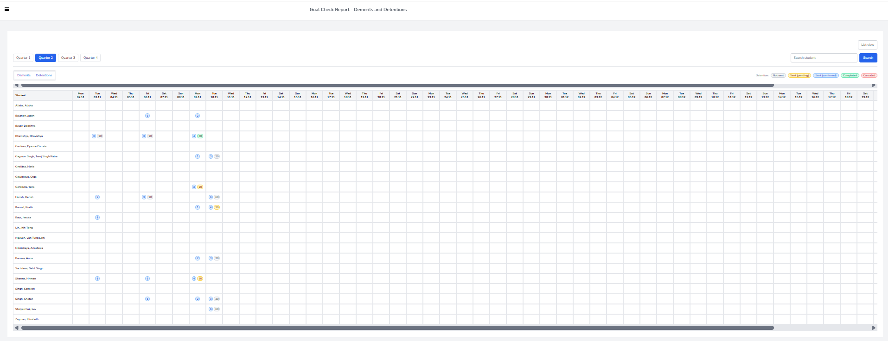
Day box
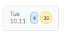
If you click on a demerit (blue box), a pop-up window will appear displaying its description.
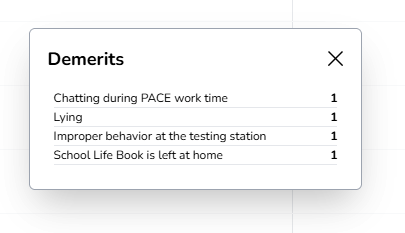
If you click on the detention minutes, a pop-up window with detention details and management options will appear.
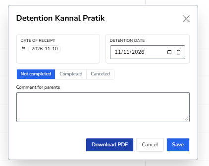
In this window, you will find:
- Student's name – the name of the student.
- Date received – the date when the demerits were assigned.
- Date of detention – you can choose the date when the student will serve their detention.
- Status – there are three possible statuses:
- Not Completed – the student has not served their detention yet. This status is assigned by default.
- Completed – the student has served their detention.
- Canceled – the detention has been canceled and the student is no longer required to serve it.
- Comment – a text field where you can add a comment.
- Download PDF – a button to download the detention details as a PDF file.
- Save / Discard – buttons to save your changes or discard them.
You need to select Completed if the student has served their detention.
Select Canceled if you decide that the student does not need to serve the detention.
Leave the status as Not Completed if the student has not served their detention yet.
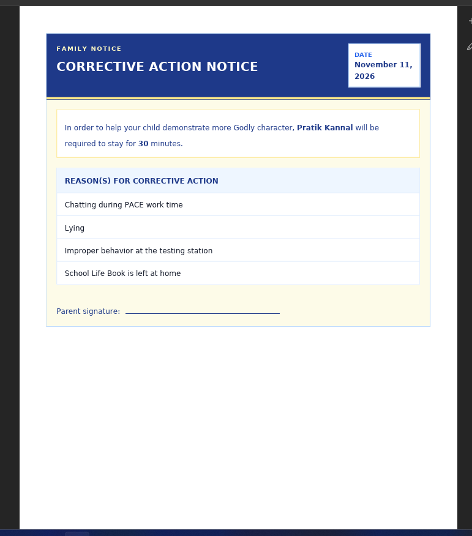